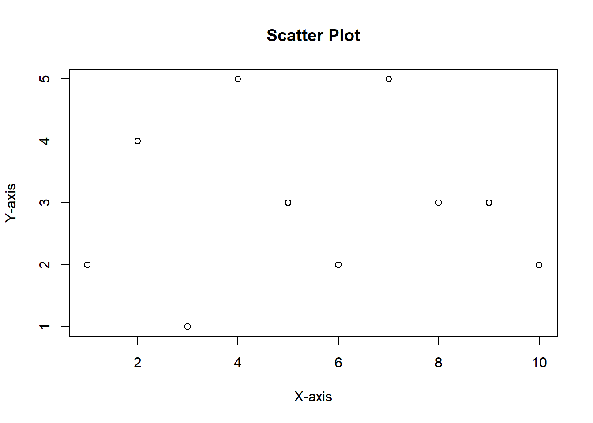
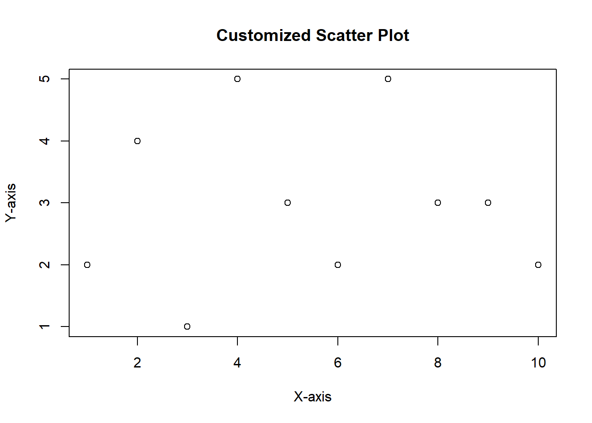
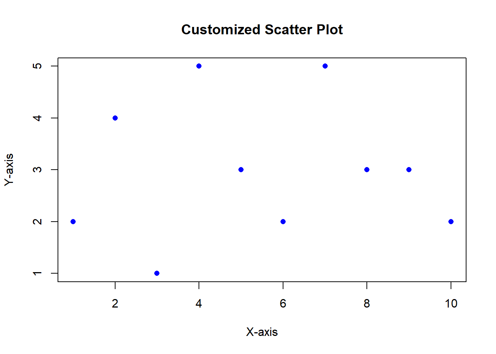
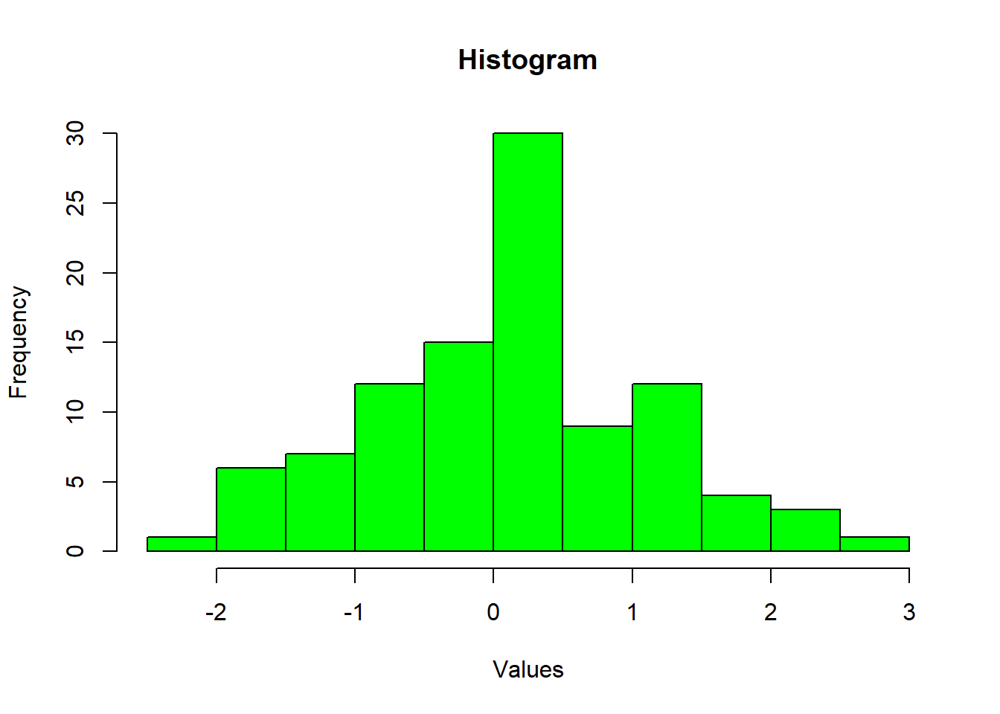
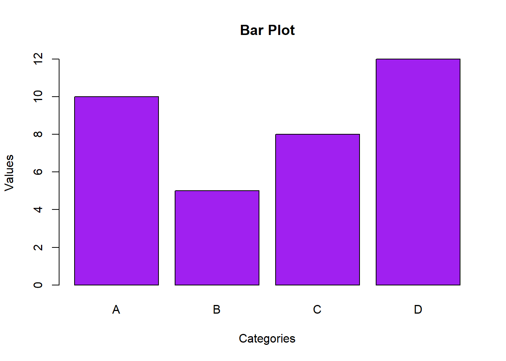
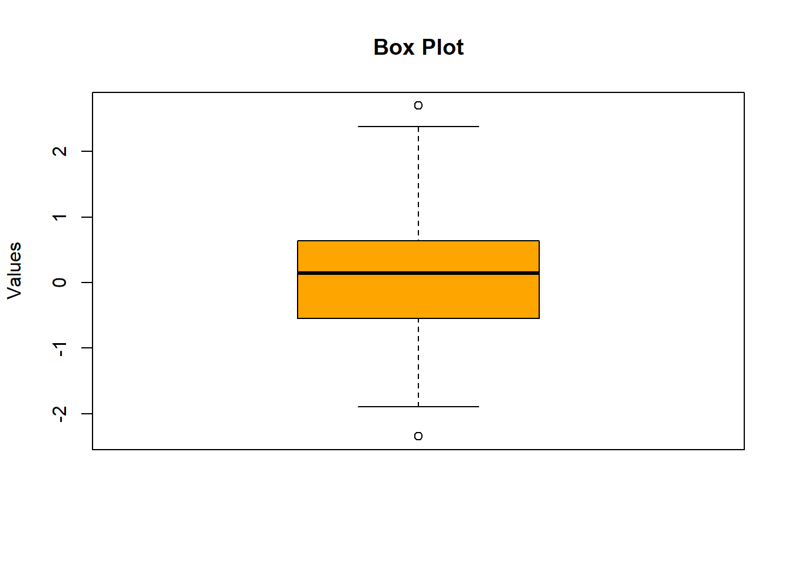

2 + 5[1] 7
R is an open source programming language primarily used for statistical analysis and data visualisation. It was first released in 1995 by Ross Ihaka and Robert Gentleman, from who it gained its name. Since then it has gained increasing popularity with statistical and academic communities due to its open-source nature, quickly and continuing to grow in popularity.
RStudio is an integrated development environment (IDE), providing a user-friendly interface for writing code. Where R is the language, you use to talk to your computer, RStudio gives you the means to use that language.
Within RStudio we use packages, a package refers to a collection of functions, data, and documentation bundled together for a specific purpose, making it easier for users to access and use specific functionalities.
The Comprehensive R Archive Network (CRAN), established in 1997, is a network of servers that store R packages, documentation, and R updates, providing a centralised repository for all R users.
R is available on Windows, OS, and Linux/Unix platforms. To install R and RStudio on your own device you can follow this guide, or if you are confident, you can go directly to CRAN and grab the latest version.
When you first launch RStudio you will be present with The R console (as seen below), which is split into three sections, a fourth section will appear when you open up your first R Script. It looks overwhelming but bare with it, it actually makes R very user friendly.

The source (top left). This is your primary workspace for editing and running your scripts
The console (Bottom left). The console provides a direct command line where you can type and execute commands with an instant output. Useful for testing functions or checking data.
The environment and history (Top right). There are multiple tabs in this pane. The environment displays your current variables, your history keeps a record of your R commands, and connections allows you to manage database connections.
Your file manager, graphics viewer and help window (Bottom right). This is another multi-tab pane. Files provides a file browser, Plots displays any plots generated, Packages shows a list of installed packages, and help provided access to the R help documentation.
In the console you will see the > symbol. This indicates the command line where you can type your direct code. Try typing the following into your console, remember to press enter to run the code!
2 + 5[1] 7If the command is typed incorrectly, or you run an incomplete command, you will see the + prompt in the console screen. You will need to either complete the command or press Esc to start again.
It’s good practice to comments to your code, this enables you to add context to your programming so another human can understand it (and you can remember what you’ve done). We do this using #, anything after a # will not be read by R.
# This script prints Hello World
wave = "Hello World"
print(wave)[1] "Hello World"Although a small number of packages come installed with base R, you will more often than not need to install the ones you require and load them in the console or source pane. As mentioned before, CRAN holds a massive repository of packages that can be easily imported into R using the install.packages() function. Running the following code to install Tidyverse (a set of packages designed for data science)
#First we install the package from CRAN
install.packages("tidyverse")
#Once the packages is installed we need to run it in our R enviroment
library(tidyverse)There is a LOT of material to try and learn when it comes to R. However, each R function has its own R help page that you can access by typing a ? in front of the functions name. (However, the package for your function has to be installed first!).
Try it out by typing the following base R function into the console and learn about its usage in the help pane.
?sumR has an extremely large active community of users that have freely given their help to those who have come before you and will continue to do so! Here are just a few of the places you can go to if you find yourself stuck.
Stack Overflow is a website were programmers answer questions that are then ranks by users on their helpfulness. You can submit a question to the forum, or search through the thousands of previously answered questions.
Hands-On Programming with R is a great book that will take you through the basics of R programming, with lots of tips and projects along the way.
Data camp offers a variety if on-line taught courses from their team covering data manipulation, Regression in R, Hypothesis testing and many more. There is a monthly fee however the first class in all courses if free.
In this brief introduction, we’ll explore the basics of arithmetic operations in R. Whether you’re new to programming or just getting started with R, understanding how to perform basic arithmetic is a fundamental skill.
Addition (+). The addition operator is used to add two numbers together.
3 + 5[1] 8Subtraction (-). The subtraction operator is used to subtract the right operand from the left.
7 - 4[1] 3Multiplication (*). The multiplication operator is used to multiply two numbers.
2 * 6[1] 12Division (/). The division operator is used to divide the left operand by the right.
10 / 2[1] 5Exponentiation (^). The exponentiation operator raises the left operand to the power of the right.
2 ^ 3[1] 8Just like in mathematics, R follows the order of operations (BODMAS), where parentheses/brackets take precedence, followed by exponents, multiplication, and division (from left to right), and finally addition and subtraction (from left to right).
3 * (4 + 2) / 2[1] 9This expression would first add 4 and 2, then multiply the result by 3, and finally divide by 2.
In programming, a variable is like a container that holds information. It has a name, a value, and a specific data type. Understanding variables is a crucial first step in programming so lets get started.
Creating a variable is straightforward. You can assign a value to a variable using the assignment operator (<- or =). Here’s a simple example, try it for your self.
# Assigning the value 10 to a variable named 'x'
x <- 10In this example, we’ve created a variable named ‘x’ and assigned it the value 10. Now, whenever you refer to ‘x’ in your code, it represents the number 10.
When naming variables, there are a few rules to keep in mind:
Variable names are case-sensitive, so ‘x’ and ‘X’ would be treated as different variables.
Names can include letters, numbers, and dots, but they cannot start with a number.
Avoid using reserved words in R (like if, else, function, etc.) as variable names.
# Good variable names
my_variable <- 42
userAge <- 25
# Bad variable names
This_Is_My_Variable_Name <- 42
my_var1 <- 25
my_var2 <- 25Try to choose descriptive and meaningful names for your variables to make your code more readable.
R is a dynamically typed language, which means you don’t have to explicitly declare the data type of a variable. R will automatically determine the type based on the assigned value. Common data types include numeric, character, logical, and more.
Data consisting of only numbers with decimal places are referred to as NUMERIC and can be positive or negative. You can create a numeric variable in the following way:
# Numeric variable
height <- 175.5
# Entering the name of your variable into the console or the source pane will print the value you have assigned it.
height[1] 175.5INTEGER is a subset of NUMERIC containing only whole numbers, these can be positive or negative. You can create an integer variable in the following way:
# Integer variable
height <- 180
height[1] 180Data consisting of words and sentences enclosed in quotes are referred to as a CHARACTER. If you enclose numbers in quotes, they become characters. You can create a Character variable in the following way:
# Character variable
name <- "John Doe"
name[1] "John Doe"Data that can only be two values (true or false, yes or no), is referred to as LOGICAL. You can create a Logical variable in the following way:
# Logical variable
is_student <- TRUE
is_student[1] TRUEYou may find it useful at times to check the class of your data, this can be done using the class() function:
# Numeric data type
number <- 42
class(number) [1] "numeric"In some cases, you may need to convert your data types, and example would be converting numeric data to character data. For this you would use the ‘as.character()’ function. This function is designed to coerce objects to character class.
You can do this on a list IF the list contains elements of the same type.
age <- 48
class(age)[1] "numeric"age <- as.character(age)
class(age)[1] "character"One of the first steps in any data analysis journey is importing data into R so that you can start exploring and manipulating it. Here we will cover the basics of importing data from various sources.
Data can come from various sources, such as spreadsheets, databases, text files, or on-line repositories. R provides functions and packages to handle a wide range of data formats.
One of the simplest ways to import data is using the read.table() function. This function is suitable for reading tabular data from text files.
# Reading a CSV file
my_data <- read.table("path/to/your/file.csv", header = TRUE, sep = ",")Here, “path/to/your/file.csv” is the path to your CSV file.
Adjust the sep parameter based on the delimiter in your file (comma in this example).
For CSV (Comma-Separated Values) files, there’s a dedicated function called read.csv() that simplifies the process.
# Reading a CSV file
my_data <- read.csv("path/to/your/file.csv")To import data from Excel files, you can use the readxl() package.
# Install and load the readxl() package
install.packages("readxl")
library(readxl)
# Read in an Excel file
my_data <- read_excel("path/to/your/file.xlsx")In R, a DataFrame is a powerful and versatile data structure that allows you to organize, manipulate, and analyse tabular data. If you’re familiar with spreadsheets, think of a DataFrame as a similar concept, where data is organized into rows and columns.
A DataFrame is a two-dimensional, heterogeneous data structure, similar to a table in a relational database or a spreadsheet in which data is arranged in rows and columns. Each column can have a different data type (numeric, character, factor, etc.).
Rectangular Structure: DataFrames have a rectangular structure, meaning that each column must have the same number of rows.
Columns: Each column of a DataFrame can be thought of as a vector, and columns can be of different data types.
Column Names: Columns have names, and you can access the data in a column using these names.
Row Names: Rows also have names, but they are optional. Rows can be accessed using numeric indices or row names.
Creation: You can create a DataFrame using the data.frame() function or by importing data from external sources like CSV files.
Indexing and Sub-setting: You can access and subset data in a DataFrame using row and column indices or by column names.
You can create simple a DataFrame using the data.frame() function in R.
# load the library dplyr
library(dplyr)
Attaching package: 'dplyr'The following objects are masked from 'package:stats':
filter, lagThe following objects are masked from 'package:base':
intersect, setdiff, setequal, union# Create a simple DataFrame
my_dataframe <- data.frame(
Name = c("Alice", "Bob", "Charlie"),
Age = c(25, 30, 22),
Grade = c("A", "B", "A-")
)
# Printing the DataFrame
print(my_dataframe) Name Age Grade
1 Alice 25 A
2 Bob 30 B
3 Charlie 22 A-This creates a DataFrame with three columns: “Name,” “Age,” and “Score.”
Column Names: As mentioned previously, columns are identified by names. You can access a specific column using the column name.
# Access the age column in the dataframe names 'my_dataframe', and save it to
#the variable 'ages'
ages <- my_dataframe$Age
print(ages)[1] 25 30 22In the environment window you will see the value ages has appeared, next to this you will see the class type of the data (num), the structure of your new dataframe ([1:3] which is 3 columns), and then the values it contains.
Indexing: You can access specific elements, rows, or columns using indexing.
# Access a specific element in your dataframe
element <- my_dataframe[2, 3]
# Access a the column Grade, in your dataframe
grades <- my_dataframe$GradeSometimes columns will need to be added or removed from a dataframe.
You can add a new column to a DataFrame by assigning values to a new column name. For example:
# Using your dataframe, add the following scores to the the column 'Score'
my_dataframe$Score <- c(95, 89, 75)Here, we’ve added a new column named “Score” and assigned it values 95, 89, and 75. you can check this by inspecting the dataframe
print(my_dataframe) Name Age Grade Score
1 Alice 25 A 95
2 Bob 30 B 89
3 Charlie 22 A- 75mutate() Function from dplyrThe mutate() function from the dplyr package is useful for creating new columns based on existing ones. For example:
my_dataframe <- my_dataframe %>%
mutate(Score = c(95, 89, 75))
print(my_dataframe) Name Age Grade Score
1 Alice 25 A 95
2 Bob 30 B 89
3 Charlie 22 A- 75This achieves the same result as the previous example.
subset() or Indexing to remove columns:You can remove columns by selecting only the columns you want to keep. For example, to remove the “Score” column:
# Create a simple DataFrame
my_dataframe <- data.frame(
Name = c("Alice", "Bob", "Charlie"),
Age = c(25, 30, 22),
Grade = c("A", "B", "A-"))
# Using subset
my_dataframe <- subset(my_dataframe, select = c(Name, Age))
print(my_dataframe) Name Age
1 Alice 25
2 Bob 30
3 Charlie 22# Using indexing
my_dataframe <- my_dataframe[, c("Name", "Age")]
print(my_dataframe) Name Age
1 Alice 25
2 Bob 30
3 Charlie 22$ Operator:You can also use the $ operator to drop a column by setting it to NULL . This is used to extract a specific component or variable from a list or data frame.
# Create a simple DataFrame
my_dataframe <- data.frame(
Name = c("Alice", "Bob", "Charlie"),
Age = c(25, 30, 22),
Grade = c("A", "B", "A-"))
# remove the score column
my_dataframe$Grade <- NULL
print(my_dataframe) Name Age
1 Alice 25
2 Bob 30
3 Charlie 22This removes the “Grade” column from the DataFrame.
select() Function from dplyrThe select() function from the dplyr package allows you to choose which columns to keep. To keep only the “Name” and “Age” columns:
# Create a simple DataFrame
my_dataframe <- data.frame(
Name = c("Alice", "Bob", "Charlie"),
Age = c(25, 30, 22),
Grade = c("A", "B", "A-"))
my_dataframe <- my_dataframe %>%
select(Name, Age)
print(my_dataframe) Name Age
1 Alice 25
2 Bob 30
3 Charlie 22These are basic examples, but they cover the fundamentals of adding and removing columns in a DataFrame in R.
You can export a DataFrame to a file such as a csv.
# Exporting data to a CSV file
write.csv(my_dataframe, "path/to/save/your/file.csv", row.names = FALSE)A list is a versatile and flexible data structure that allows you to store and organize different types of data, including other lists! Lists are particularly powerful when dealing with heterogeneous data, where elements can be of different types or structures. You will see lists used to represent different experiments, where each experiment includes details such as variables, conditions, and results.
You can create a list using the list() function in R.
# Create a simple list
my_simple_list <- list(
Name = "Alice",
Age = 25,
Score = 95,
Married = TRUE)
# Display the list
print(my_simple_list)$Name
[1] "Alice"
$Age
[1] 25
$Score
[1] 95
$Married
[1] TRUEIn this example, each element of the list is a character string representing a popular computer game
Elements: Each element in a list can be a scalar (numeric, character, logical), vector, matrix, data frame, or even another list.
Names: Elements in a list can have names, making it easy to access specific elements by their names.
# Access the 'age' element in the list
name <- my_simple_list$Name
# Display the list
print(name)[1] "Alice"Adding Elements: You can add new elements to a list.
# Adding a new element to the list
my_simple_list$new_element <- "New Data"
# Display the list
print(my_simple_list)$Name
[1] "Alice"
$Age
[1] 25
$Score
[1] 95
$Married
[1] TRUE
$new_element
[1] "New Data"When you print the new list yo will see that New Data has been added to the end
Data visualization is a crucial aspect of data analysis, allowing you to explore, communicate, and interpret patterns and trends within your data. In base R, there are several functions that you can use to create simple yet effective visualizations.
In R, the plot() function is a fundamental and versatile function used for creating various types of plots and visualizations. It is a part of the base graphics system in R and can be used to generate a wide range of plots, including scatter plots, line plots, bar plots, histograms, boxplots, and more.
#sample: Creating a scatter plot
x <- c(1, 2, 3, 4, 5, 6, 7, 8, 9, 10)
y <- c(2, 4, 1, 5, 3, 2, 5, 3, 3, 2)
plot(x, y, main = "Scatter Plot", xlab = "X-axis", ylab = "Y-axis")
The basic syntax of the plot() function is as follows:
{plot(x, y, ...)}
x and y are the variables to be plotted. Depending on the type of plot, these can represent different things (e.g., coordinates for a scatter plot, values for a histogram).
... represents additional arguments that can be passed to control aspects of the plot, such as titles, axis labels, colours, etc. Check the ?plot help page to find out what arguments the function takes.
Labels and Titles: You can customize your plots by adding titles, axis labels, and legends.
# Adding titles and labels
plot(x, y, main = "Customized Scatter Plot", xlab = "X-axis", ylab = "Y-axis")
Main is you plot title, xlab is your x axis label, ylab your y axis label.
Colours and Symbols: Use the col parameter to specify colours and the pch parameter to choose different plotting symbols.
# Customizing colors and symbols
plot(x, y, main = "Customized Scatter Plot", xlab = "X-axis", ylab = "Y-axis", col = "blue", pch = 16)
Col takes a colour, either as a hexi code such as #FFFFFF, or a colour entered as a string from a pallet that is built into R. You can cee this using the colors() function.
Some of the key base plotting functions in R include plot(), hist(), barplot(), boxplot(), and more. Here are some commonly used base plotting functions along with a brief description of their purposes:
The hist() Function: used for creating histograms to visualize the distribution of numeric data.
# Creating a histogram
data <- rnorm(100)
hist(data, main = "Histogram", xlab = "Values", col = "green", border = "black")
The barplot() Function: Used for to create barplots with categorical data.
# Creating a bar plot
categories <- c("A", "B", "C", "D")
values <- c(10, 5, 8, 12)
barplot(values, names.arg = categories, main = "Bar Plot", xlab = "Categories", ylab = "Values", col = "purple")
The boxplot() Function: Box plots are useful for visualizing the distribution of data and identifying outliers.
# Example: Creating a box plot
boxplot(data, main = "Box Plot", ylab = "Values", col = "orange", border = "black")
You can save your plots as image files using functions like png(), jpeg(), or pdf().
png("my_plot.png", width = 800, height = 600)
plot(x, y, main = "Scatter Plot")
dev.off() Now your going to import a data set and apply some of the skills you’ve just covered to manipulate the data.
We are going to use the starwars data set available in R. To access this data set we use the data() function, were also going to need the dplyr() package from the tidyverse
# Load the dplyr library
library(dplyr)
# Access the starwars dataset
data(starwars) You will now see the data set has appeared in the environment window of RStudio, under Data. It should contain 87 obs (these are observations), and 14 variables (these are the columns).
After loading the dplyr package, you can access the starwars dataset. The starwars dataset contains information about characters in the Star Wars universe. The head() function allows you to inspect the first few rows of your data.
# View the first few rows of the dataset
head(starwars) # A tibble: 6 × 14
name height mass hair_color skin_color eye_color birth_year sex gender
<chr> <int> <dbl> <chr> <chr> <chr> <dbl> <chr> <chr>
1 Luke Sky… 172 77 blond fair blue 19 male mascu…
2 C-3PO 167 75 <NA> gold yellow 112 none mascu…
3 R2-D2 96 32 <NA> white, bl… red 33 none mascu…
4 Darth Va… 202 136 none white yellow 41.9 male mascu…
5 Leia Org… 150 49 brown light brown 19 fema… femin…
6 Owen Lars 178 120 brown, gr… light blue 52 male mascu…
# ℹ 5 more variables: homeworld <chr>, species <chr>, films <list>,
# vehicles <list>, starships <list>You will see the 14 variables the starwars dataset contains. Lets access the name and homeworld columns to see where the characters call home.
# Using your dataframe, access the 'name' and 'homeworld' columns and add
# them to a new variable (remember to pick a sensible name)
# Print the variable you've just createdWhat is the average height of the characters in starwars? We can use the mean() function to find out
# Using the mean() function, find out what average height of a character is
# in the 'height' column. How would you find the tallest person in the galaxy?
# Using your df starwars
# Find the row with the largest value in the 'height' column using which.max()
# Extract the 'name' corresponding to the row with the largest height
name_of_largest_height <- starwars$name[row_with_largest_height]
# Find the largest value in the 'height' column using max() adding na.rm = TRUE within the function to remove n/a data
# Print the resultCreate a barplot() to visualise the eye colour across the galaxy. Use the ?barplot documentation to play with play with the plot and see how much you can adjust, form the angle of the eye colour names, to the colours of the bars.
# First you need to count the frequency of each eye colour
eye_color_counts <- table(starwars$eye_color)
# Now create the barplot using the eye_color_counts variable
barplot(
)